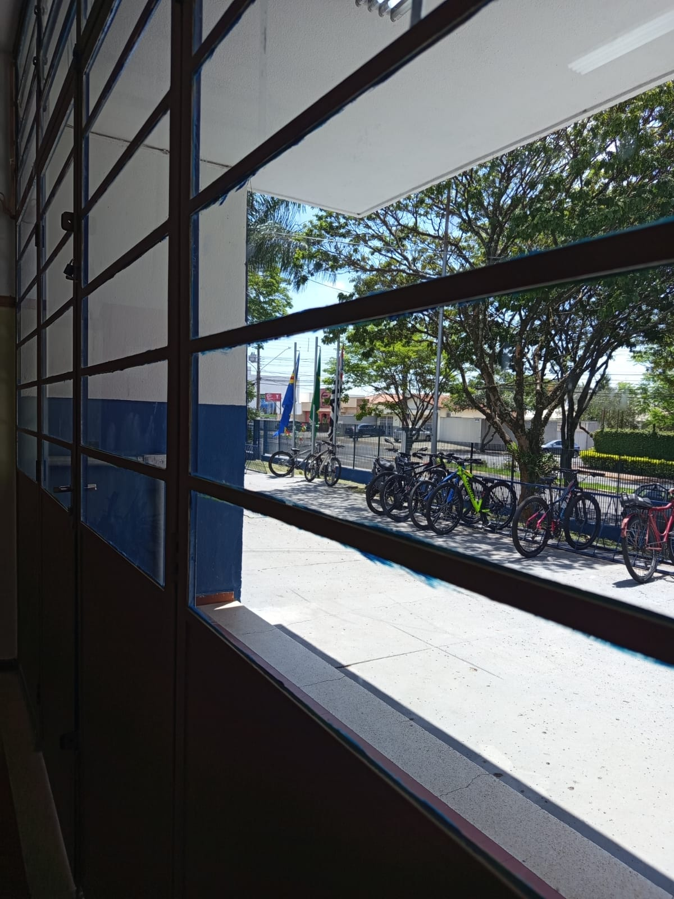
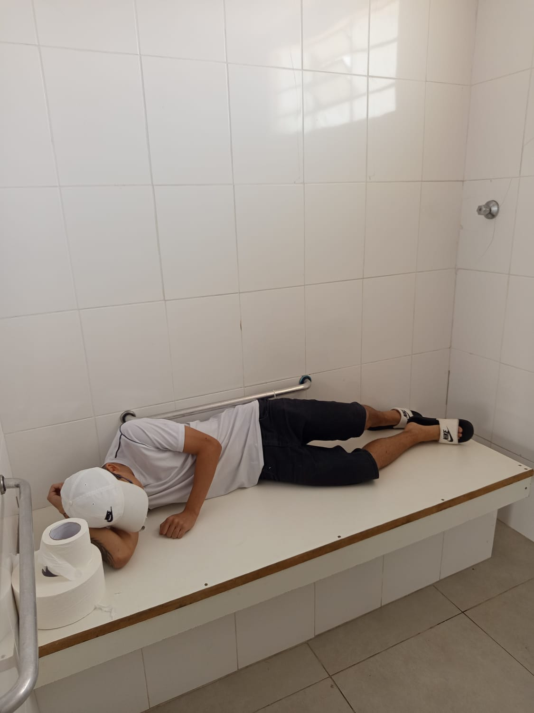

Matrículas
Períodos, documentos necessários e orientações para inscrição.
Cerquilho, SP
Um ponto de encontro para a comunidade escolar: estudantes, famílias e equipe.
Acompanhe os comunicadosEscola Arthur Bernardes · Cerquilho
Mural da escola
Avisos, datas e novidades publicados pela equipe escolar.
Os avisos oficiais da escola aparecerão neste espaço.
Apresentação da escola
Um olhar sobre os espaços da escola em Cerquilho.




Para estudantes e famílias
Consulte os dados oficiais da unidade ou entre em contato com a secretaria.
Períodos, documentos necessários e orientações para inscrição.
Datas letivas, reuniões, eventos e períodos de recesso.
Horários, etapas de ensino e orientações para as famílias.
Atendimento
Para informações sobre matrículas, documentos ou rotina escolar, procure os canais oficiais da unidade.